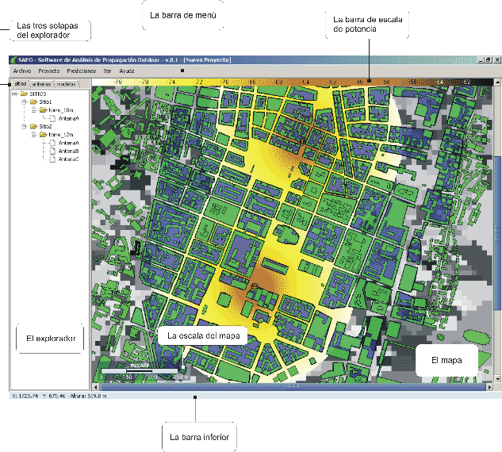

Siguiente:
La barra de menú
Subir:
Software de Análisis de
Anterior:
Cómo ejecutar SAPO
Índice General
Componentes de la ventana principal de SAPO
Figura 1:
La pantalla principal de
SAPO

Subsecciones
La barra de menú
El mapa
El explorador
SAPO